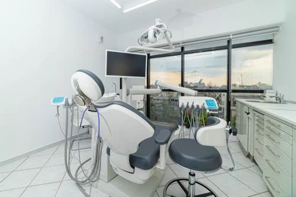
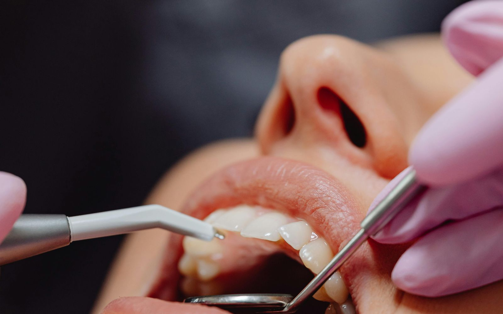
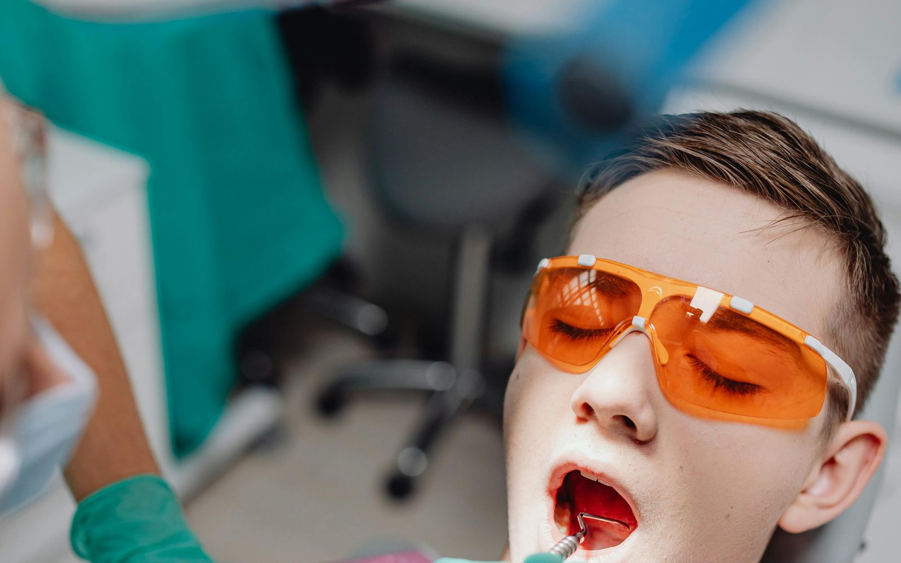

Σχεδιασμός όλου του στόματος.
Πριν από κάθε αποκατάσταση, εμφύτευμα ή αισθητική διόρθωση, αξιολογούνται μαζί η σύγκλειση, τα ούλα, η γνάθος και το πρόσωπο. Πρώτα έρχεται το σχέδιο.
Οδοντίατρος - Προσθετολόγος · Περιστέρι
Η Μπάμπη Στέλλα DDS αντιμετωπίζει όλο το φάσμα της οδοντιατρικής στο ιδιωτικό της ιατρείο στο Περιστέρι, από τον προληπτικό έλεγχο μέχρι την προσθετική αποκατάσταση και τα εμφυτεύματα.
Google 5.0 / 5 από 67 αξιολογήσεις · Doctoranytime 10.0 / 10 από 45 αξιολογήσεις
01 / Προσέγγιση
Η διαφορά είναι τρία επιπλέον χρόνια κλινικής εξειδίκευσης και ένας συγκεκριμένος τρόπος σκέψης: ο προσθετολόγος σχεδιάζει όλο το στόμα πριν αγγίξει ένα δόντι.
Η Μπάμπη Στέλλα DDS σπούδασε Οδοντιατρική και ολοκλήρωσε τριετή κλινική εξειδίκευση στην Προσθετική στην Οδοντιατρική Σχολή του ΕΚΠΑ. Στο ιδιωτικό της ιατρείο στο Περιστέρι, η ίδια προσοχή δίνεται τόσο στον εξαμηνιαίο έλεγχο όσο και σε μια σύνθετη αποκατάσταση γνάθου.
Καλύπτουμε όλο το φάσμα των οδοντιατρικών αναγκών, με έμφαση στη διάγνωση, τον σωστό σχεδιασμό και τη μακροχρόνια λειτουργικότητα.


Η ΓΙΑΤΡΟΣ
Είναι πτυχιούχος της Οδοντιατρικής Σχολής του Εθνικού και Καποδιστριακού Πανεπιστημίου Αθηνών και έχει ολοκληρώσει τριετές πρόγραμμα μεταπτυχιακών σπουδών στην Προσθετική στο Department of Prosthodontics της ίδιας σχολής.
Έχει διατελέσει επιστημονική συνεργάτης της Οδοντιατρικής Σχολής στο τμήμα Προσθετικής, έχει εργαστεί σε εξειδικευμένα οδοντιατρεία και κλινικές σε Αθήνα και Κρήτη, και συνεχίζει να παρακολουθεί ελληνικά και διεθνή συνέδρια.
Πώς δουλεύουμε
Πριν από κάθε αποκατάσταση, εμφύτευμα ή αισθητική διόρθωση, αξιολογούνται μαζί η σύγκλειση, τα ούλα, η γνάθος και το πρόσωπο. Πρώτα έρχεται το σχέδιο.
Καμία πράξη δεν ξεκινά πριν καταλάβετε τι περιλαμβάνει, ποιες εναλλακτικές υπάρχουν, πόσο θα διαρκέσει και ποιο θα είναι το αναμενόμενο αποτέλεσμα.
Το ιατρείο ακολουθεί σύγχρονα διεθνή κλινικά πρωτόκολλα στη γενική, αισθητική, χειρουργική και εμφυτευματολογική οδοντιατρική.
Υπηρεσίες
Γενική οδοντιατρική, αισθητική και επανορθωτική οδοντιατρική, χειρουργική στόματος, εμφυτεύματα και προσθετική αποκατάσταση, με κέντρο τον σωστό σχεδιασμό.

Γενική και προληπτικήΣτοματικός έλεγχος, καθαρισμός, σφραγίσματα, ενδοδοντία και αντιμετώπιση περιοδοντίτιδας, με προσοχή στη μακροχρόνια υγεία του δοντιού.

Προσθετική και αποκατάστασηΘήκες, γέφυρες, ένθετα, επένθετα, ανασύσταση δοντιού και προσθετική αποκατάσταση σε φυσικά δόντια ή εμφυτεύματα.
 Αισθητική οδοντιατρική
Αισθητική οδοντιατρική
Όψεις ρητίνης, λεύκανση, bonding, υαλουρονικό, botox για βρυγμό και αισθητικές παρεμβάσεις που συμπληρώνουν το θεραπευτικό σχέδιο.
Το ιατρείο
Το ιατρείο βρίσκεται στο Περιστέρι, κοντά στον σταθμό Αγίου Αντωνίου. Είναι οργανωμένο για προσεκτική διάγνωση και θεραπεία υψηλής ποιότητας.
Το πρώτο ραντεβού
Τι σας έφερε στο ιατρείο, τι σας έχει ειπωθεί μέχρι τώρα, τι θέλετε να αντιμετωπίσετε, το ιατρικό ιστορικό και τυχόν ακτινογραφίες.
Πλήρης αξιολόγηση δοντιών, ούλων, σύγκλεισης και μαλακών ιστών. Όταν χρειάζεται, συζητείται και η κατάλληλη απεικόνιση.
Γραπτό θεραπευτικό πλάνο με σειρά, χρόνο και ενδεικτικό κόστος. Το παίρνετε μαζί σας, το σκέφτεστε και αποφασίζετε.
Αξιολογήσεις
«Εμπνέει από την πρώτη στιγμή εμπιστοσύνη και είναι επεξηγηματική για όλη τη διαδικασία της θεραπείας.»
Δήμητρα
«Καταπληκτική δουλειά. Πήγα για καθαρισμό, ασχολήθηκε πολύ μαζί μου και εννοείται θα ξαναπάω.»
Παναγιώτης
«Επαγγελματίας, ευγενική και πολύ φιλική. Απαντάει σε όλες σου τις ερωτήσεις. Λεπτομερής στη δουλειά της.»
Ελένη
Συχνές ερωτήσεις
Συνήθως ένας προληπτικός έλεγχος και καθαρισμός κάθε έξι μήνες βοηθά να εντοπίζονται έγκαιρα τερηδόνες, ουλίτιδα, περιοδοντικά προβλήματα ή φθορές σε παλιές αποκαταστάσεις. Σε ασθενείς με περιοδοντίτιδα, εμφυτεύματα ή έντονο βρυγμό, το διάστημα μπορεί να είναι μικρότερο.
Καλέστε άμεσα το ιατρείο, ειδικά αν υπάρχει έντονος πόνος, πρήξιμο, τραυματισμός, σπασμένο δόντι ή αποκόλληση προσθετικής εργασίας. Αν υπάρχει δυσκολία στην αναπνοή, πυρετός ή γρήγορα αυξανόμενο οίδημα, απευθυνθείτε σε εφημερεύον νοσοκομείο.
Μετά την πρώτη επίσκεψη λαμβάνετε θεραπευτικό πλάνο με ενδεικτικό κόστος, πριν ξεκινήσει οποιαδήποτε πράξη.
Ναι, όταν υπάρχει ανάγκη. Ο έλεγχος, η αντιμετώπιση πόνου, τα σφραγίσματα και η θεραπεία των ούλων μπορούν να γίνουν με την κατάλληλη προσαρμογή. Η λεύκανση αναβάλλεται για μετά την εγκυμοσύνη και τον θηλασμό.